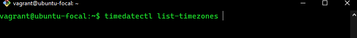
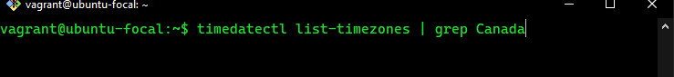
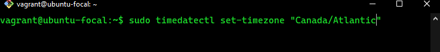
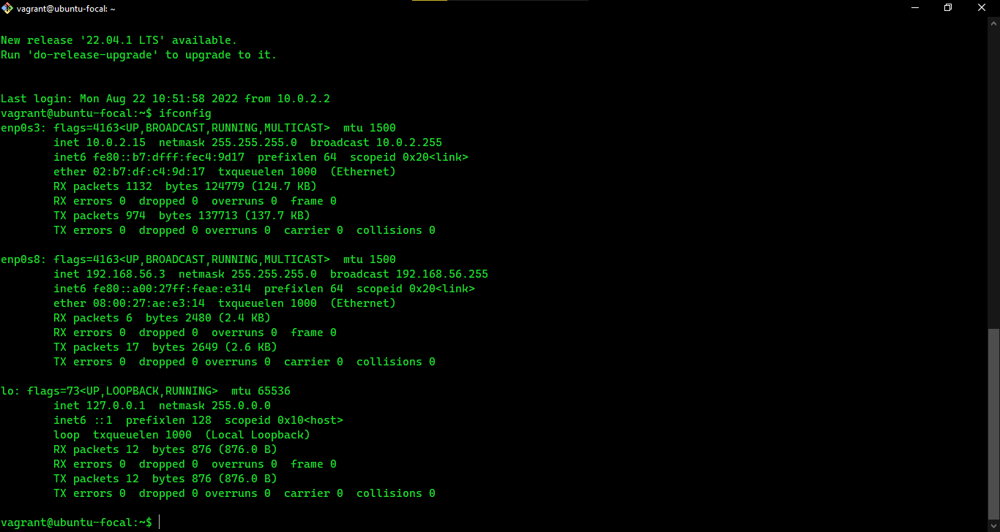

Altschool-Cloud-Exercises Project
Command line
- file: is used to show the type of a file in a directory
- less: is used to browse the content of a file
- locate: To find a file with a name matching a pattern
- tail: Is used to print the last few lines of a file
- touch: Is used to create an empty file or to update and existing one
- sudo: It execute a command as a superuser
- mkdir: Is used to create a folder in a directory
- pwd: Is used to print the working directory
- chmod: Is used to change the permission of a directory
- echo: is a shell builtin that performs a very simple task.
It prints out its text arguments on standard output:


Change Of Timezone
I used timedatectl to change my timezone to cannada timezone
How I set my timezone
vagrant@ubuntu-focal:~$ timedatectl list-timezones: to list all timezones

vagrant@ubuntu-focal:~$ timedatectl list-timezones | grep Canada :
to narrow down my search to Canada

vagrant@ubuntu-focal:~$ sudo timedatectl set-timezone " Canada/Atlantic" :
to set my timezone to Canada/Atlantic

Private Network From Dhcp

Exercise 4
- Create 3 groups /- admin, support & engineering and add the admin group to sudoers.
- Create a user in each of the groups.
- Generate SSH keys for the user in the admin group
Instructions:
- Submit the contents of /etc/passwd, /etc/group, /etc/sudoers
Solution:
- Content of /etc/passwd screenshoot
- Content of /etc/group screenshoot
- Content of /etc/sudoers screenshoot


Exercise 5
- Install PHP 7.4 on your local linux machine using the
ppa:ondrej/php package repo.
Instructions:
- Learn how to use the add-apt-repository command
- Submit the content of /etc/apt/sources.list and the output of php -v command.
Solution:
- Content of the /etc/apt/sources.list
- Content of php-v screenshoot


Exercise 6
- You already have Github account, aso setup a
GitLab account if you don't have one already - You already have a altschool-cloud-exercises project,
clone the project to your local system - Setup your name and email in Git's global config
- Submit the output of:
- git config -l
- git remote -v
- git log
- git config -l
- git remote -v
- git log